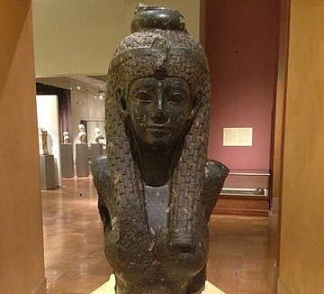

Egypt | Artefacts
5 Less-known Artifacts of Ancient Egypt
Published: Jan 13 2021
In-depth stories about 5 artifacts from Ancient Egypt. Among them, a bust from Cleopatra's sunken palace and Tutanchamon's meaningful neck stand.
Introduction
Many stories have been written about the Rosetta stone and the bust of Nefertiti.
They sure are mysterious, and beautiful.
But, that does not mean we should forget more obscure items. So here they are, 5 less-known artifacts from Ancient Egypt.
~~~
Bust of Cleopatra VII Philopator
Cleopatra, the queen of Roman-ruled Egypt.
The bust was most likely found in the Sunken Palace of Cleopatra, a small royal island close to Alexandria’s harbor. This island, ‘Antirhodos’, is believed to have sunk in the 4th century CE after a series of earthquakes and tsunamis. It submerged the palaces of Cleopatra and Marc Anthony - and beautiful artifacts like this one.
The island was officially rediscovered in 1996, but busts like the one above may have been discovered and resurfaced much earlier than that.
You may enjoy watching this documentary about the underwater excavations around Antirhodos.